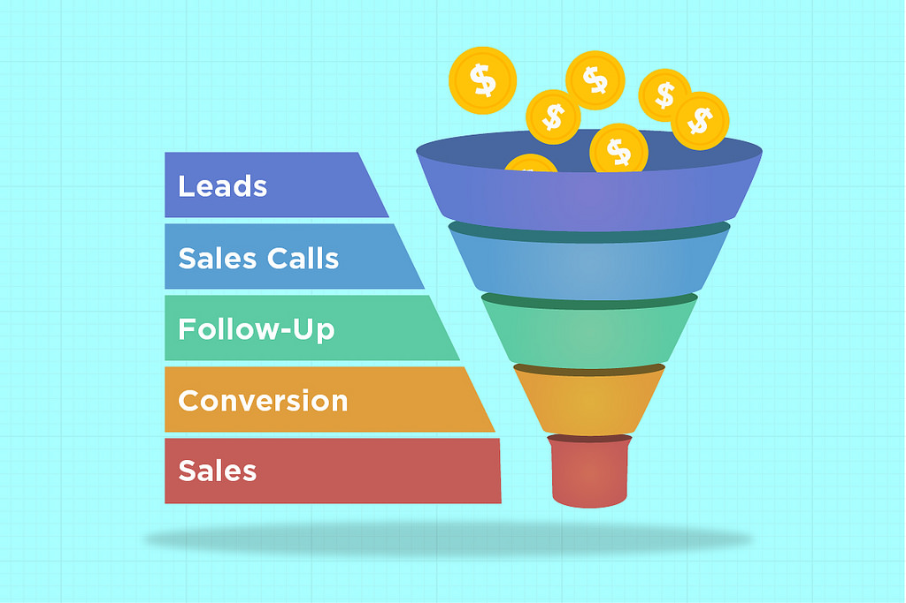

3 tips on how to optimize your SaaS sales funnel
#1 Sales Data Trumps Everything
Not using data is a missed opportunity for any SaaS company, ourselves included. It’s the difference between knowing your customer and what makes them move along the funnel or just taking a guess.
Simply having a sales funnel in place is not enough. You need to identify the data points along the funnel that you will use to measure success for better conversions. Above all, those data points need to make sense for you and your team.
The KPIs you put in place should measure the performance of your funnel as well as optimise it as you go along. If you’re unsure of what KPIs to measure, our last article on sales metrics every VP should measure will provide good starting ground.
Whether it is acquiring more qualified leads or retaining loyal customers, building your sales system on a foundation of analytics will give your team the ability to make informed decisions.
#2 Engage your customers
A big mistake most SaaS companies make is focusing on getting paid subscriptions, rather than getting their users to actually use their software and see how it benefits their lives.
When it comes to effective selling, your sales team need to make your customers realise the value your SaaS provides. Once your customers see how much value you bring in, it will be hard for them to say no.
In order to do that, you need to make engagement with your product a part of the selling process, requiring minimum commitment from the customer’s end.
Gingerbread Marketing gives us a great example of how Mention.comdoes this. Knowing that many of their customers will surpass the usual phone conversations with a sales rep and go directly to their website, Mention gives their free trial a twist by allowing their new users to create an online alert directly when they sign up.
This method combines Mention’s trial, engagement and on-boarding all together in one seamless process. At the same time, by setting up their alert right away, it helps their new customers see the value their SaaS provides upfront.
To sum it up, make sure your customers understand the value you provide by engaging them with your SaaS product from the start.
#3 Define your real CAC
This KPI is so important, we had to give it a space of its own.
If you’re not measuring how much it really costs you to acquire a customer, you’re in the dark because you have no idea how much revenue each of your customer represents that hasn’t already been spent on signing them up.
Usually when we measure CAC we do so by calculating from the user’s immediate source. For example, if you received a customer through a Facebook ad that cost you USD10 per customer, you would consider that as your CAC. But you’re doing it wrong.
The real way to measure CAC is to run the customer journey through your entire funnel starting from marketing and ending with customer success.
Lincoln Murphy calls this “fully loaded” CAC and defines it as everything it takes to get the customer including:
“…the cost of advertising, marketing, sales, support during the Free Trial, on-boarding costs, etc. – and even includes the costs associated with attracting prospects (and non-prospects) that didn’t convert to a paying customer.”
Once you get a handle on your real CAC you need to measure it up against your customer profitability and lifetime value (LTV) to get a proper idea of how to optimise your funnel from end to end. That way you’ll know both how much you’re spending on your customers and how long you are spending it.
Oleks Tsukur
Oleks Tsukur helps SaaS businesses grow revenue by custom conversion funnel.